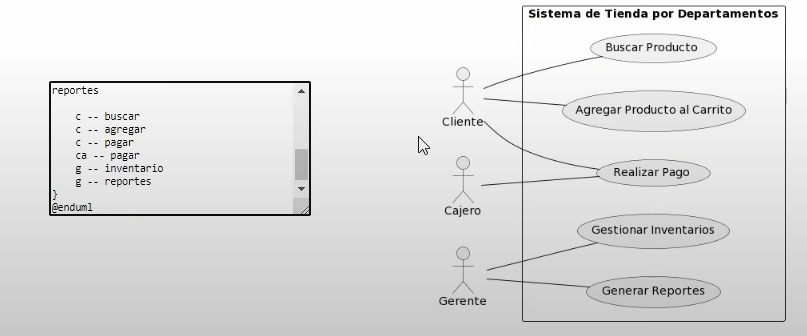

Clase
Relaciones
- Herencia
Hereda atributos de la superclase a subclases
- Asociación

Describe una acción sin dependencias
- Agregación
Parte - todo, la relacion sale de la clase parte a la clase todo
- Composición
Un objeto derivado no podria existir sin su objeto principal
Multiplicidad
Ejemplo
Promp para GPT - Diagrama de requisitos
PROMPT: Genera un código Plantuml para un diagrama de casos de uso de: ...
Se puede cambiar el prompt por Diagrama de Clases

Página Plantuml
Copie el código de IA y de en SUBMIT
Se puede cambiar el prompt por Diagrama de Clases